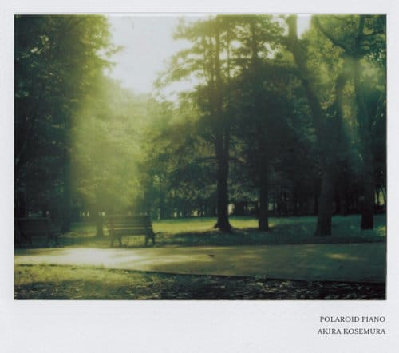

Забавные японские картинки.
Забавные японские картинки.

Охрененные совершенно англичане. Очень рекомендую!
Охуенный какой трип!

Очень клевый альбом. Вот на пробу на саундклауде или вот на трубе :) Непременно брошу его в ящик, но чутка попозже :)

Совершенно офигенный японец. Чудная музыка :)
Передать не могу, как же все-таки меня расстроил Гугл тем, что убил в ридере шаринг. Вот теперь сижу, читаю что-то кайфовое и не знаю что с ним дальше делать. А гугл+ совсем не пошел, не мое, да и ходить туда-сюда не хочется. Жаль.

Какой-то совершенно кайфовый (и настолько же ебнутый в плане названий дисков и их обложек) бразильский пианист. Рекомендую!
О, а я помню, что первый сиди, который я купил, был фирменный “Queen — Greatest Hits II”.